第 19 讲：在线游戏架构（下）——角色同步、命中判定、MMO 架构与反作弊
从角色移动同步的插值/外推，到命中判定的延迟补偿，再到 MMO 的服务拆分、带宽优化、反作弊与无缝大世界，讲清一张网络游戏后端的全貌。
◆ 学完这一讲，你应该能
能解释插值（Interpolation）与外推（Dead Reckoning）各自的原理、适用场景与混合方式
能说清客户端命中判定 + 服务器校验的流程，以及 Lag Compensation 的“时间回卷”公式
能画出 MMOG 的分层服务架构（Login/Gateway/Lobby/Character/Game/DB），并说明每层职责
能列举带宽优化的手段：数据压缩、相关性（AOI/网格/链表/PVS）、按距离降频
能说明常见作弊方式与对应防护（混淆、加壳、哈希校验、加密、反作弊 SDK、AI 检测、人工审查）
能解释无缝分区（Seamless Zoning）的边界宽度、实体迁移与跨服复制思路
核心结论速记
网络同步的本质是“在延迟下让远端看起来平滑且公平”：插值用过去两个快照做平滑，外推用历史状态预测当前，二者常混合使用。
外推在碰撞时会“穿墙/卡住”，需要物理模拟混合（Physics Simulation Blending）把外推状态与服务器权威状态做可调混合。
命中判定通常是客户端先判、服务器再校验；服务器校验需要“回卷”到玩家开火时刻的世界状态，回卷时间 = 当前服务器时间 − 网络延迟 − 客户端插值偏移。
MMOG 后端按职责拆成多个服务（登录、网关、大厅、角色、游戏逻辑、交易、社交、匹配、存储），通过注册中心做服务发现与健康检查。
带宽优化三板斧：压缩同步数据（定点化/量化）、只同步相关对象（AOI/空间网格/正交链表/PVS）、按距离降低更新频率。
反作弊是分层对抗：内存混淆、可执行文件加壳、文件哈希校验、流量加密、内核级反作弊、AI 行为检测、人工 Overwatch、统计异常检测。
大世界靠分区（Zoning）扩展：无缝分区要求边界宽度 ≥ 最大 AOI 半径，实体跨边界时做状态迁移与协同复制。
011. 角色移动同步：为什么远端角色看起来一顿一顿
在多人游戏里，玩家看到自己的角色是“本地即时响应”的，但看到别人的角色却是“网络延迟后的历史状态”。如果直接把收到的位置包贴上去，远端角色就会一跳一跳（choppy）。课件的出发点就是：如何让远端角色在屏幕上平滑移动，同时又不偏离服务器权威状态太远。
两种基本手段：
- 插值（Interpolation）：收到两个快照后，不立刻渲染最新快照，而是把渲染时间往回退一点（buffer），在两个快照之间做线性/球面插值。好处是平滑、不会预测错；代价是看到的敌人是“过去”的位置，带来额外延迟。
- 外推（Extrapolation / Dead Reckoning）：用最近收到的状态（位置、速度、加速度）按物理规律往前推，预测“现在”应该在哪。好处是延迟感低；代价是预测可能错，遇到碰撞/急转弯就会“穿模”。
课件还提到 Buffer States and Deferred Render：数据包到达后不立即渲染，而是放进缓冲区，等渲染时间追上时再取用——这是插值能工作的前提。
对车辆这类高速、物理感强的对象，插值会遇到“转弯时轨迹对不上”的挑战，于是引出后面的外推与混合方案。
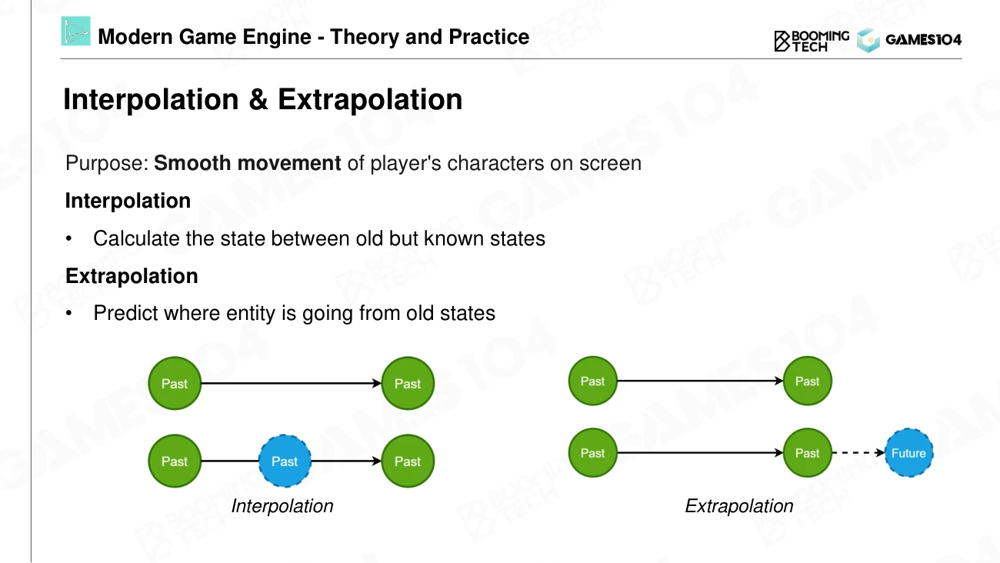
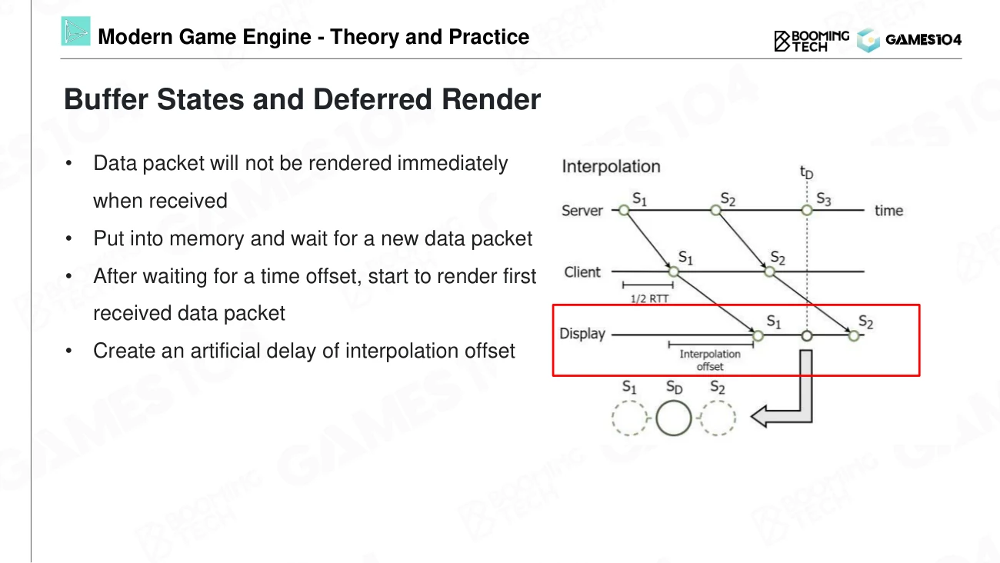
补充说明
记住一句话：插值 = 看过去，外推 = 猜现在。两者都是“用时间换平滑/低延迟”的取舍。
常见坑
插值缓冲设得太小 → 网络抖动时出现“瞬移/回拉” → 增大缓冲或做自适应缓冲（按 RTT 抖动调整）。
外推直接线性外推位置而不考虑加速度/转向 → 转弯时轨迹明显偏离 → 用速度+加速度，或改用投影速度混合（Projective Velocity Blending）。
UE / Unity 落地
UE 的 CharacterMovementComponent 自带客户端预测与服务器校正（Client Prediction / Server Correction），本质是“本地先走、服务器纠偏”，与课件讲的“本地即时 + 远端平滑”是同一套思路。
UE 的 Network Emulation（PktLag / PktLagVariance）可以在编辑器里模拟延迟与抖动，用来复现插值/外推问题。
Unity 的 Netcode for GameObjects 提供 NetworkTransform 的插值选项（Interpolate），对应课件里的插值缓冲。
022. 外推的进阶：投影速度混合与碰撞时的物理混合
朴素外推在直线运动时没问题，但角色/车辆会转弯、会撞墙。课件给出两个改进：
投影速度混合（Projective Velocity Blending）：在时刻 \(t_0\) 收到角色在 \(p_0\)、速度 \(v_0\)、加速度 \(a_0\)。外推时不是简单 \(p = p_0 + v_0 \Delta t\)，而是把速度沿“从当前位置指向目标位置”的方向做投影混合，用一个随时间变化的混合系数 \(\lambda\) 在“旧速度方向”和“指向最新快照的方向”之间过渡： \[ \lambda = \frac{t - t_0}{t_B - t_0} \] 其中 \(t_B\) 是下一个快照到达/生效的时刻。这样外推轨迹会逐渐“拐向”真实快照，而不是一条直线冲出去。
碰撞问题（Collision Issues）：课件用四个阶段描述外推撞墙的尴尬：
- 碰撞开始（Phase 1）：外推轨迹与地面/墙相交；
- 外推继续（Phase 2）：因为还在用旧状态，角色继续“往墙里走”；
- 收到快照（Phase 3）：服务器说“你早停了”，客户端被迫回拉，看起来像穿墙后弹回；
- 物理模拟混合（Physics Simulation Blending）：在“客户端模拟状态”和“服务器权威状态”之间做可调混合，让回拉不那么突兀。
课件的结论是：外推适合“物理感强、可预测”的运动（车辆、抛物线），插值适合“不可预测、频繁变向”的运动（人物跑动）。实际项目常常两者混用：近距离/可预测用外推，远距离/复杂交互用插值。
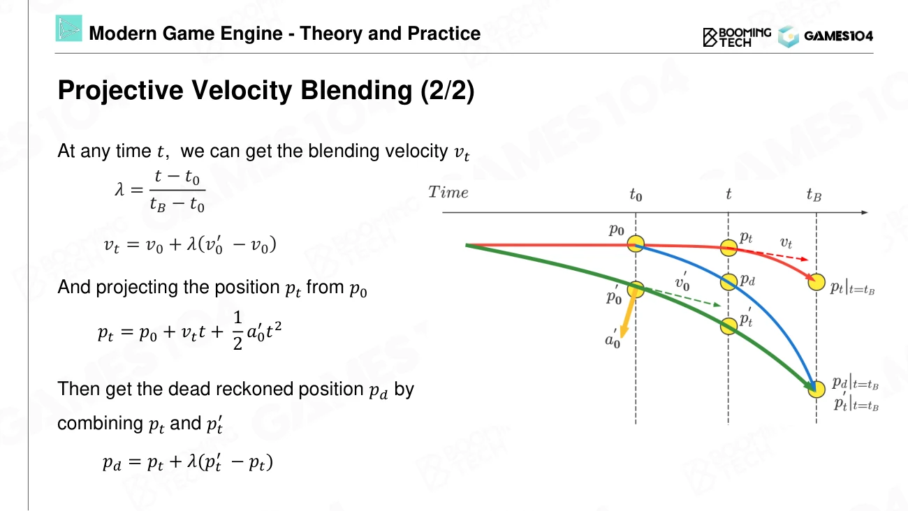
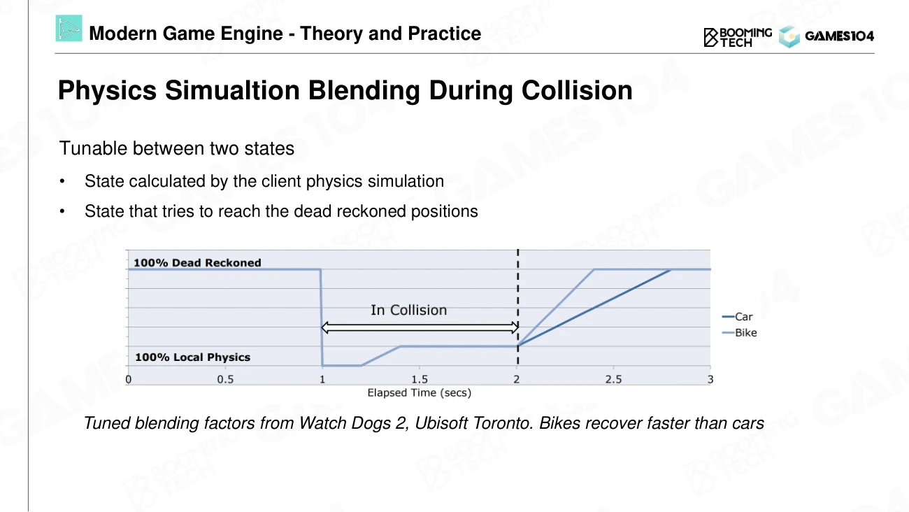
补充说明
课件的四阶段碰撞图（P20–P23）建议对照看：红=快照，蓝=模拟轨迹，绿=地面，能直观看到“外推冲过头再被拉回”。
常见坑
把 \(\lambda\) 算成常数或超出 [0,1] → 混合方向反了/过冲 → 对 \(\lambda\) 做 clamp，并确保 \(t_B > t_0\)。
外推不做碰撞检测 → 角色穿墙后才被服务器拉回 → 客户端外推也要跑简化碰撞，或对碰撞状态做混合。
UE / Unity 落地
UE 的移动组件在客户端预测失败时会触发“位置校正”，若校正幅度大就会出现明显回拉；可用
bEnableServerDualMoveScrub类思路或降低校正频率来缓解。Unity 的 Rigidbody 插值（Interpolate/Extrapolate）选项直接对应课件里的插值/外推取舍。
033. 命中判定：为什么你“明明打中了”却没掉血
网络射击游戏最经典的抱怨是“我打中了但没伤害”。课件先解释原因：由于延迟、插值偏移和时间差，你屏幕上看到的敌人位置，并不是服务器上敌人的真实位置。你看到的是“过去”的敌人。
于是命中判定（Hit Registration）要解决的是：让所有玩家对“这一枪是否命中”达成共识。课件给的流程是：
- 客户端检测命中：用本地渲染的（插值后的）角色位置做射线/碰撞检测；
- 客户端把命中事件发给服务器，附带完整的射线信息（起点、方向、时间戳）；
- 服务器校验：服务器不能直接信客户端，但也不能用“现在”的世界状态去校验，因为那会和客户端看到的不一致。
课件还对比了 Hitscan 武器 vs Projectile 武器：Hitscan 是即时射线，判定简单；Projectile 有飞行时间，服务器需要模拟弹道，校验更复杂。
服务器校验的难点：服务器“只能猜”——它不知道客户端当时到底看到了什么。所以课件引出下一节的 Lag Compensation：服务器把世界状态“回卷”到玩家开火的那一刻再判定。
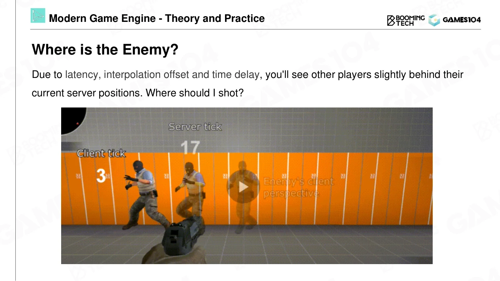
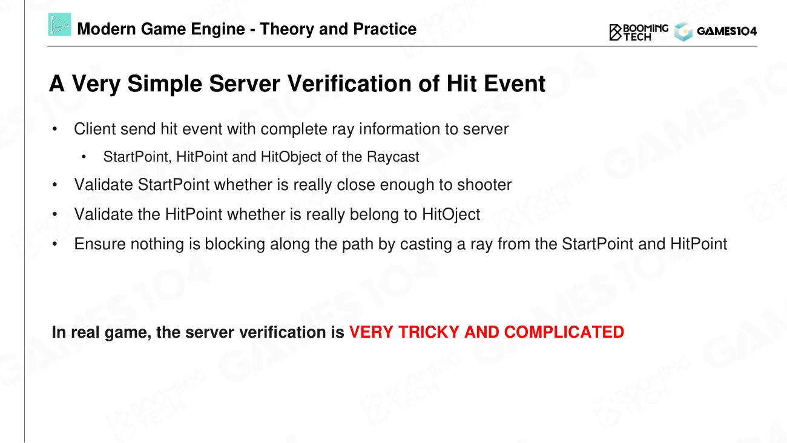
补充说明
命中判定的核心矛盾：客户端要“手感即时”，服务器要“公平可信”。所有方案都是在这两者之间找平衡。
常见坑
客户端只发“我打中了”而不发射线信息 → 服务器无法校验，外挂可随意伪造 → 必须附带起点/方向/时间戳等可复算数据。
服务器用“当前”状态校验客户端“过去”的射击 → 合法射击被误判为不中 → 需要 Lag Compensation 回卷。
UE / Unity 落地
UE 的
UGameplayStatics::ApplyPointDamage/LineTraceSingleByChannel常用于客户端命中检测；服务器端需再做一次校验。UE 的
FNetworkPredictionData/FSavedMove_Character保存客户端历史移动，是“回卷”思路的同类实现。Unity 的
Physics.Raycast做客户端命中检测，服务器端用NetworkTime回卷碰撞体位置做校验。
044. 延迟补偿（Lag Compensation）：把世界回卷到开火那一刻
Lag Compensation 的定义：当玩家命令到达服务器时，服务器把世界状态回卷到该玩家“当时看到”的时刻，再做判定。
课件给出的回卷时间公式是： \[ \text{RewindTime} = \text{Current Server Time} - \text{Packet Latency} - \text{Client View Interpolation} \]
逐项解释：
- Current Server Time：服务器收到命中事件的时刻；
- Packet Latency：数据包从客户端到服务器的单程延迟（通常用 RTT/2 估计）；
- Client View Interpolation：客户端为了平滑而做的插值缓冲带来的额外时间偏移（客户端看到的是“过去”的状态）。
服务器需要保存过去一段时间（通常几百毫秒）的世界快照（位置、碰撞体），收到命中事件后按 RewindTime 找到对应快照，把目标碰撞体移回那个位置，再做射线检测。
课件还讨论了由此带来的“掩体问题”：
- Shooter's advantage：射击者先看到你探出掩体，他开枪时服务器回卷，可能判定命中——你觉得自己已经躲回去了。
- Peeker's advantage：探头的人因为本地即时响应，比守方更早看到对方，天然占优。
缓解手段包括：启动帧（Startup Frames）——攻击/移动前加固定前摇动画，稀释延迟差异；以及本地预测 VFX——客户端先播命中特效给即时反馈，最终以服务器为准。
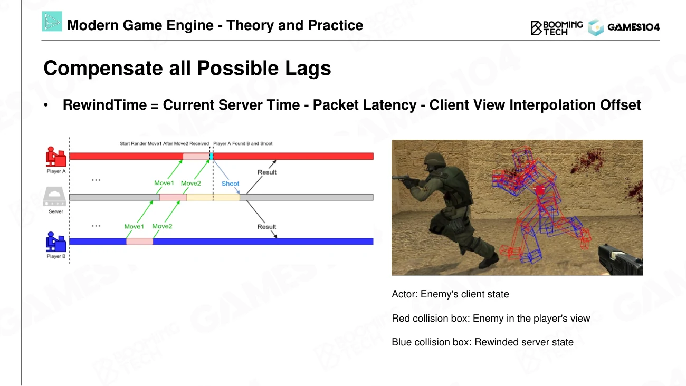
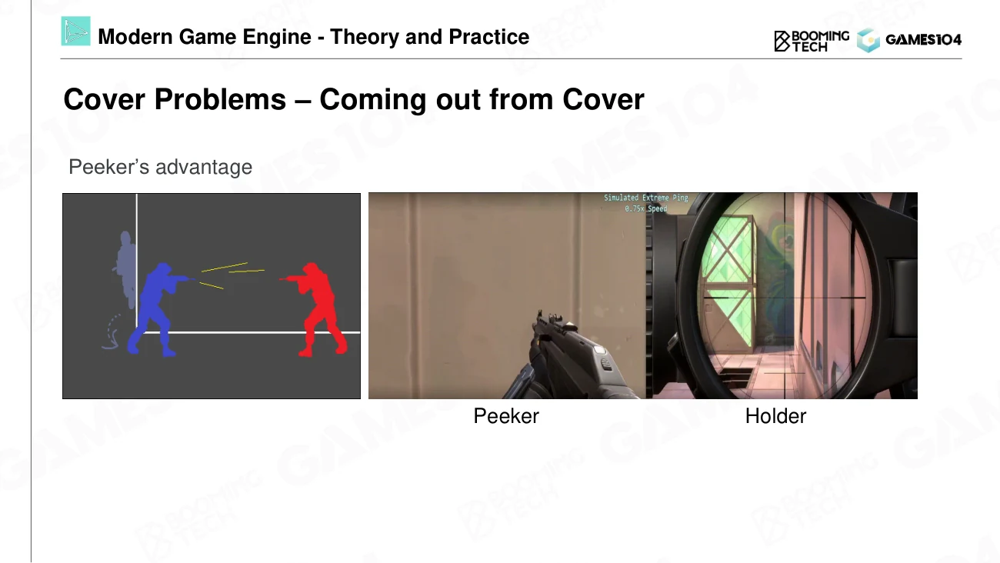
补充说明
回卷是“用服务器的历史换客户端的公平”，代价是服务器要存历史、要能快速回滚碰撞体。
常见坑
回卷时间只减了 RTT/2，忘了减客户端插值偏移 → 服务器回卷得不够早，合法射击被判不中 → 把插值缓冲时长也计入。
快照保存时间太短（如 200ms）→ 高延迟玩家回卷越界，只能按最老快照判定 → 快照窗口要覆盖最大允许延迟（常见 500ms~1s）。
对所有武器都做回卷 → 近战/范围伤害判定错乱 → 只对需要精确射线的武器做回卷。
UE / Unity 落地
UE 的
FRepMove/ 移动历史与ServerMove时间戳，是服务器回卷所需“历史状态”的同类数据。UE 的
Lag Compensation在 Lyra 等示例中通过保存FHitResult与时间戳实现，可参考其FHitResult时间同步思路。Unity 的 Netcode 提供
NetworkTimeSystem做时间同步，回卷需自行保存碰撞体历史。
服务器回卷判定的伪代码（cpp）
// 收到客户端命中事件
float rewindTime = serverNow - packetLatency - clientViewInterp;
WorldSnapshot snap = history.FindSnapshot(rewindTime);
for (auto& target : snap.targets) {
target.collider->SetWorldTransform(snap.transforms[target.id]);
}
FHitResult hit;
if (Raycast(ray.origin, ray.dir, hit)) {
ApplyDamage(hit.actor, damage);
}
RestoreCurrentTransforms();055. MMOG 后端：把一个大游戏拆成一组服务
MMOG（Massively Multiplayer Online Game）的特点是大量玩家、长在线、复杂子系统。课件把后端拆成若干层：
- Link Layer：
- Login Server：验证客户端连接、账号认证；
- Gateway：非常重要的接入层，负责连接保持、协议解析、转发；
- Lobby：玩家聚集、组队、匹配前的等待区；
- Character Server：管理角色数据（账号、角色、背包等）；
- Game Server：跑具体玩法逻辑（战斗、副本、场景）；
- Trading / Social / Matchmaking：交易、社交、匹配等独立服务；
- Data Storage：玩家数据、公会、副本、仓库等复杂数据。
课件还对比了三种存储：
- 关系型数据库（Relational）：结构预先定义、查询灵活、强一致，适合账号/交易等需要事务的数据；
- 非关系型（Non-Relational）：每条记录结构可不同、查询更专一，适合海量异构数据；
- 内存存储（In-Memory）：极快、Key-Value、支持排序/范围查询，适合排行榜、会话、热点数据。
随着玩家增长，单机服务撑不住，就要上分布式系统：把任务分散到多台机器。但分布式带来新问题：数据互斥访问、分布式 bug 像瘟疫一样扩散、一致性难保证。于是需要负载均衡与一致性哈希：一致性哈希把玩家映射到一个环上，增删节点时只影响相邻区间，避免“全体重新分配”。课件还提到虚拟节点来让分布更均匀。
服务多了难管理，就需要服务发现（Service Discovery）：服务启动时向注册中心（Registry）注册，客户端通过查询/监听（Query & Watch）获取实例列表，注册中心通过心跳健康检查（Health Check）剔除故障实例。
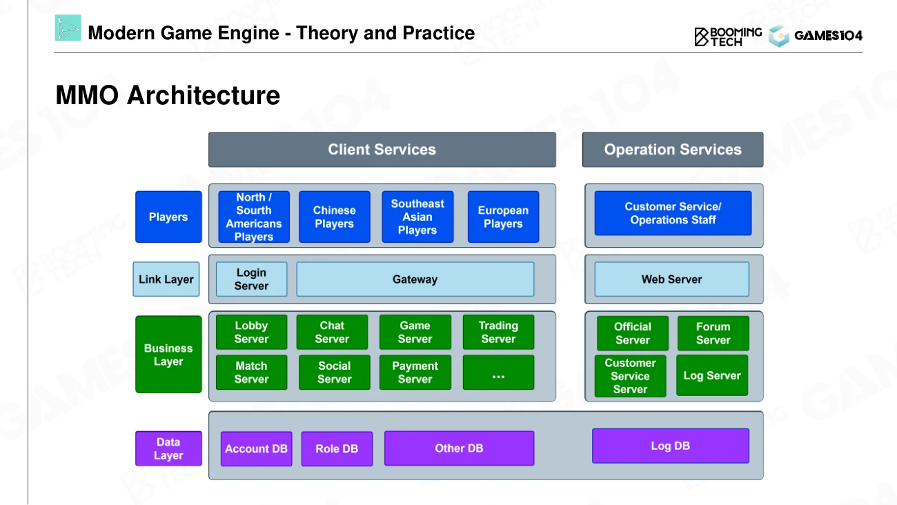
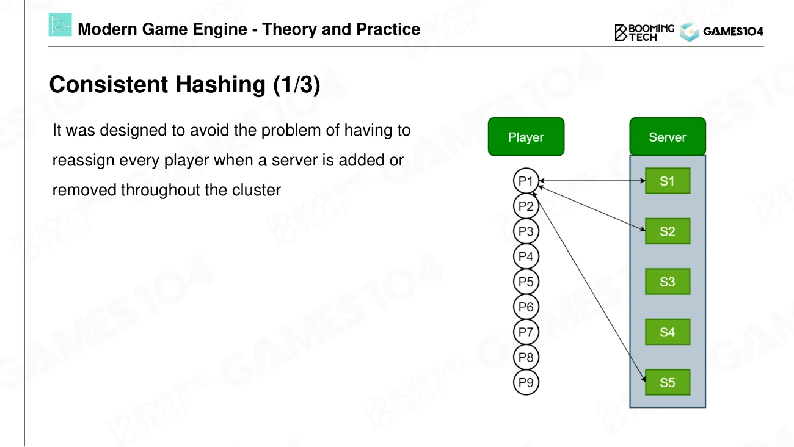
补充说明
课件强调 Gateway 是“非常重要的接入层”——它承担连接管理、协议转换、限流，是后端的第一道门。
常见坑
把所有逻辑塞进一个 Game Server → 玩家一多就崩、无法水平扩展 → 按玩法/场景拆服务。
用普通哈希做分片 → 加一台机器导致几乎所有玩家重新分配 → 改用一致性哈希 + 虚拟节点。
服务注册后不做健康检查 → 请求打到已挂实例 → 心跳超时自动摘除。
UE / Unity 落地
UE Dedicated Server 对应课件里的 Game Server；UE 的
OnlineSubsystem对应 Login/Lobby 的接入层。Unity 的
Unity Gaming Services（Lobby、Matchmaker、Relay）对应 Lobby/Matchmaking/Gateway 的角色。服务发现可对应到 Kubernetes 的 Service/DNS 或 Consul/Etcd，思路与课件的 Registry 一致。
066. 带宽优化：少发、发小、发得巧
课件先算了一笔账：带宽 = 玩家数 × 更新频率 × 每次状态变化的数据量。影响因素包括玩家数量 \(n\)、更新频率 \(f\)、每个对象的状态大小。带宽贵（按流量计费）、带宽高会推高延迟，所以必须优化。
三类手段：
1）数据压缩：同步数据里有大量浮点数。做法包括：
- 定点化/量化：位置只保留必要精度（如 1cm 精度用 16 位整数）；
- 范围压缩：玩家只会在有限范围内移动，用包围盒把坐标映射到更小的整数区间；
- 增量/差分：只发变化量。
2）对象相关性（Object Relevance）：只同步“与玩家相关”的对象。
- 静态分区（Static Zones）：把玩家分到不同区域，同区域才相关；
- AOI（Area of Interest）：以玩家为中心的一个圆/矩形，只有圈内对象才同步；
- 空间网格（Spatial Grid）：把世界切成格子，实体映射到格子，查询邻近格子即可；优点是查询 \(O(1)\) 级别，缺点是格子太小内存开销大、格子太大精度差；
- 正交链表（Orthogonal Linked-List）：用 x/y 两个有序链表维护实体，按 AOI 半径遍历；内存省、支持可变 AOI 半径，但插入/删除要维护链表；
- PVS（Potentially Visible Set）：离线计算“可能可见区域”，适合静态场景。
3）按距离降频：远处的对象降低更新频率，近处高频更新。
课件的取舍建议：小世界/少玩家可以用直接范围查询；大世界用空间网格或正交链表；静态场景可叠加 PVS。
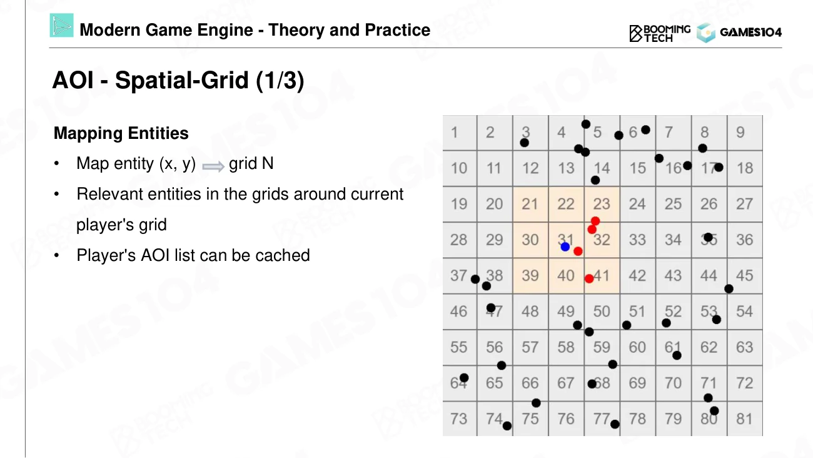
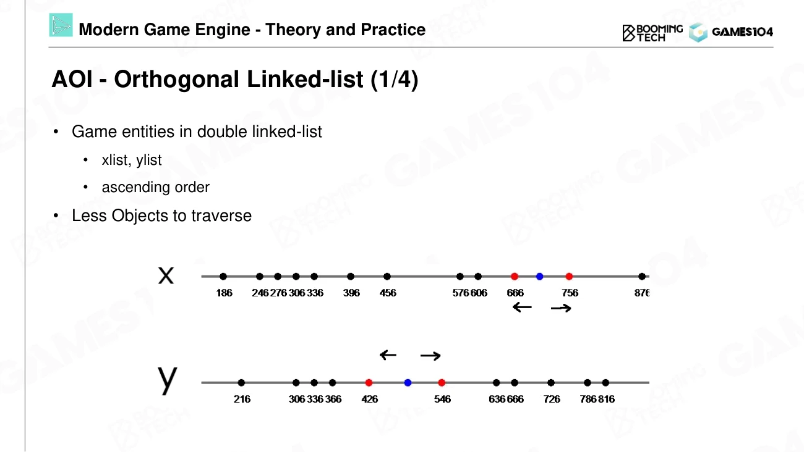
补充说明
带宽优化的顺序建议：先砍相关性（少发），再砍精度（发小），最后调频率（发得巧）。
常见坑
AOI 半径设得比同步频率能覆盖的范围大 → 远处对象频繁进出导致同步抖动 → 加迟滞（hysteresis）或按距离降频。
空间网格格子太小 → 内存爆炸、跨格查询变多 → 格子尺寸与 AOI 半径匹配（通常格子 ≈ AOI 半径）。
浮点直接发全精度 → 带宽浪费数倍 → 量化到厘米级并用整数传输。
UE / Unity 落地
UE 的
NetUpdateFrequency、MinNetUpdateFrequency、NetCullDistanceSquared直接对应“按距离降频”和“相关性裁剪”。UE 的
Replication Graph是官方提供的空间分区/相关性系统，思路与课件的 AOI/网格一致。Unity 的
NetworkTransform可配置同步精度/阈值，对应量化压缩。
077. 反作弊：从内存混淆到 AI 检测的分层对抗
课件先给了一组触目惊心的数字：相当比例的玩家遇到作弊就会退游。作弊方式五花八门：
- 修改/读取内存：改坐标、改血量、透视；
- 破解客户端：反编译、改逻辑；
- 系统层调用：改 DirectX 内核、改渲染流程（如去雾、透视）；
- 拦截/篡改网络包：中间人改包；
- AI 作弊：不碰代码，只看屏幕画面做识别（YOLO 等目标检测、骨骼动作识别）。
对应的防护是分层的：
- 内存混淆（Obfuscating Memory）：让作弊者难以定位关键数据（如坐标）在内存中的位置；
- 可执行文件加壳（Executable Packers）：压缩/混淆源码并加解压壳，增加逆向成本；
- 文件哈希校验：确保本地文件未被修改；
- 网络流量加密：对称加密（快）+ 非对称加密分发密钥（安全），防抓包改包；
- 系统软件调用检测：检测对 DirectX 等的异常修改；
- 反作弊 SDK：如 Valve Anti-Cheat、Easy Anti-Cheat，检测冲突文件与恶意行为；
- AI 作弊检测：用目标检测/动作识别模型识别异常；
- 人工审查：如 CS 的 Overwatch，由玩家回放录像投票；
- 统计检测：胜率、爆头率等异常统计。
课件的态度很务实：没有银弹，反作弊是持续对抗，要组合多种手段并接受“误伤”与“漏网”的权衡。
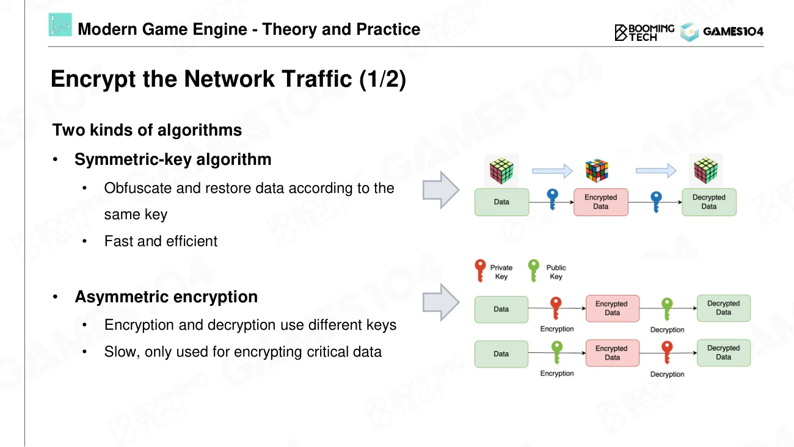
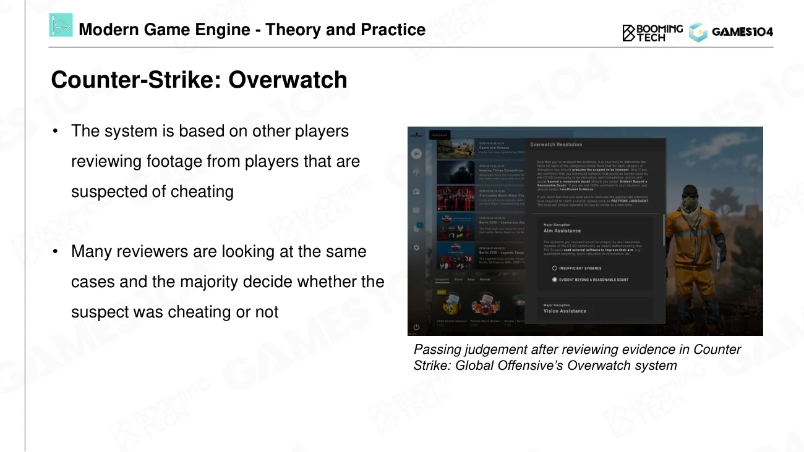
补充说明
AI 作弊是当前最棘手的一类：它不改代码、不读内存，只“看屏幕”，传统反作弊很难防，只能靠行为统计与人工审查。
常见坑
只做客户端检测 → 外挂直接绕过 → 关键判定必须在服务器做。
加密只用一个固定对称密钥 → 密钥泄露即全线失守 → 用非对称加密做密钥交换，定期轮换。
反作弊 SDK 与游戏进程冲突导致误封 → 上线前做兼容性测试并保留申诉通道。
UE / Unity 落地
UE/Unity 都可集成 Easy Anti-Cheat（EAC）或 BattlEye，作为客户端反作弊层。
UE 的
Secure网络模式与Encryption选项可开启包加密，对应课件的流量加密。服务器侧可用遥测/统计系统（如 UE 的
Analytics）做异常行为检测。
088. 可扩展的大世界：无缝分区与跨服复制
单个 Game Server 撑不住大世界，就要分区（Zoning）：把大世界切成多个区域，分给不同服务器。
无缝分区（Seamless Zones）的关键设计：
- 边界宽度 ≥ 最大 AOI 半径：这样玩家在边界附近时，两侧服务器都能覆盖他的 AOI，不会出现“对象突然消失”；
- 实体状态：分为“活跃实体（Active Entity，驻留在某个分区服务器）”和“边界实体（跨分区可见）”；
- 跨边界迁移（Cross Border: A → B）：玩家从 A 区走向 B 区时，先在 A 区标记“即将离开”，B 区准备接管，迁移完成后 A 区释放——整个过程对客户端透明，不读条。
协同复制（Replication）：多个服务器协同处理同一世界区域时，实体更新要分发给相关服务器，避免重复计算与状态冲突。
课件的组合思路是：分区 + 相关性 + 负载均衡 + 服务发现 一起用，才能既扩展玩家规模，又保持体验连续。
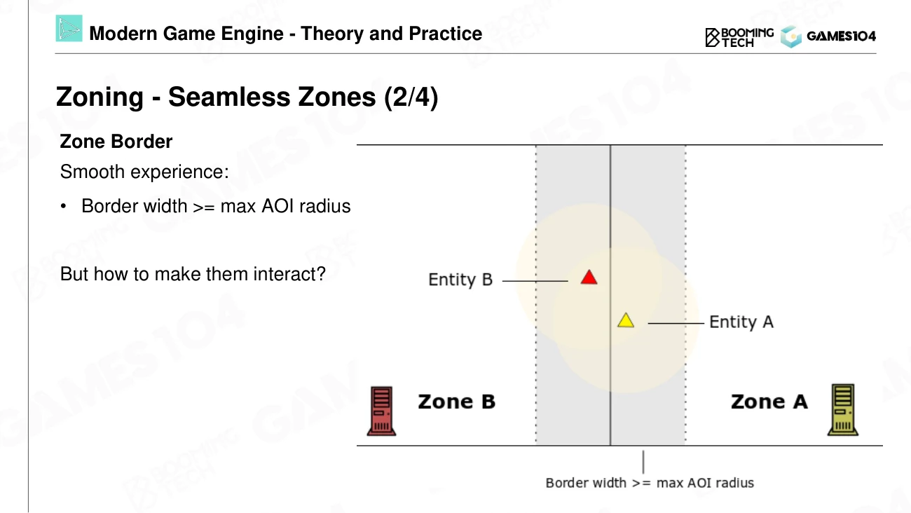
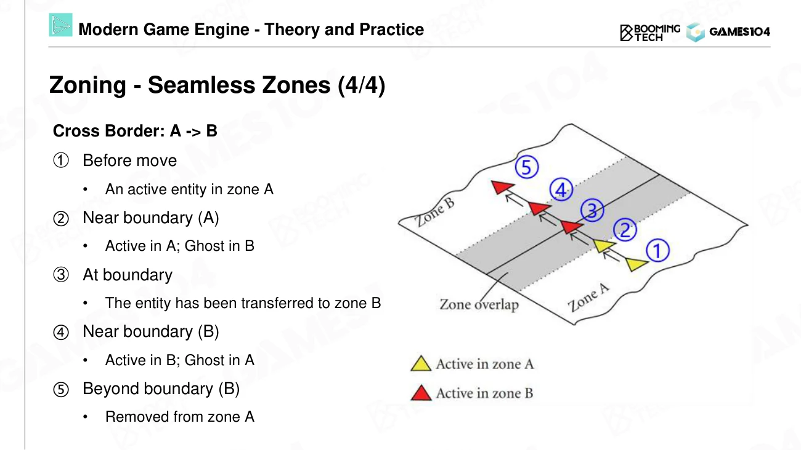
补充说明
无缝分区的本质是“用重叠边界换连续体验”，代价是边界处要双份计算与状态同步。
常见坑
边界宽度小于 AOI 半径 → 玩家在边界看到对象突然消失/出现 → 边界宽度至少等于最大 AOI 半径。
迁移时两边服务器同时写同一实体 → 状态冲突/复制 → 明确“单一权威”，迁移期间只允许一方写。
分区大小固定不随玩家密度调整 → 热门区域过载、冷门区域浪费 → 动态分区或按负载再平衡。
UE / Unity 落地
UE 的
World Partition/Level Streaming是客户端侧的大世界流送，服务器侧的分区需自行实现或借助Replication Graph。UE Dedicated Server 多进程 + 负载均衡器可对应课件的分区服务器集群。
Unity 的
Multiplayer Services与Relay可做小规模分区接入。
引擎对照表
| 概念 / 效果 | Unreal Engine | Unity |
|---|---|---|
客户端预测与服务器校正 | CharacterMovementComponent 的 Client Prediction / Server Correction | Netcode 的 ClientDriven / 自定义预测 |
插值平滑远端角色 | NetworkTransform 插值 / CharacterMovement 的平滑 | NetworkTransform 的 Interpolate 选项 |
相关性裁剪与降频 | NetCullDistanceSquared、NetUpdateFrequency、Replication Graph | NetworkTransform 同步阈值 / 自定义 AOI |
命中判定与延迟补偿 | LineTrace + 服务器回卷（保存 FHitResult 时间戳） | Physics.Raycast + NetworkTime 回卷 |
服务发现与注册 | OnlineSubsystem / 自建 Registry | UGS Lobby / Relay / 自建 Consul |
反作弊 | EAC/BattlEye 集成、包加密 | EAC/BattlEye 集成、Unity Anti-Cheat Toolkit |
术语双语表
| English | 中文 | 说明 |
|---|---|---|
| Interpolation | 插值 | 在两个已收到的快照之间平滑，代价是看到“过去”的状态。 |
| Extrapolation / Dead Reckoning | 外推 / 航位推算 | 用历史状态预测当前，延迟低但可能预测错。 |
| Projective Velocity Blending | 投影速度混合 | 外推时把速度方向逐渐混合到最新快照方向，避免直线冲过头。 |
| Hit Registration | 命中判定 | 让所有玩家对“这一枪是否命中”达成共识的机制。 |
| Lag Compensation | 延迟补偿 | 服务器把世界回卷到玩家开火时刻再判定。 |
| AOI (Area of Interest) | 兴趣区域 | 以玩家为中心的相关对象范围，只同步圈内对象。 |
| Consistent Hashing | 一致性哈希 | 节点增删只影响相邻区间的哈希分片方案。 |
| Service Discovery | 服务发现 | 服务注册 + 查询/监听 + 健康检查，让调用方找到可用实例。 |
| Seamless Zoning | 无缝分区 | 大世界切分给多台服务器，边界重叠保证体验连续。 |
| Anti-Cheat | 反作弊 | 内存混淆、加壳、哈希校验、加密、SDK、AI 检测、人工审查的组合。 |
课后练习
01 解释插值与外推的区别，并各举一个适合的游戏场景。
查看答案
提示：
从“看过去 vs 猜现在”和“延迟 vs 预测错误”两个维度想。
插值：在已收到的两个快照之间平滑渲染，看到的是过去状态，平滑但增加延迟，适合人物跑动等频繁变向、不可预测的运动。外推：用历史状态（位置/速度/加速度）预测当前，延迟低但可能预测错，适合车辆、抛物线等物理感强、可预测的运动。实际项目常混合使用。
02 服务器收到命中事件时，当前服务器时间为 10.000s，测得单程延迟 80ms，客户端插值缓冲 50ms，求回卷时间；并说明为什么不能只用 RTT/2。
查看答案
提示：
RewindTime = Current Server Time − Packet Latency − Client View Interpolation。
RewindTime = 10.000 − 0.080 − 0.050 = 9.870s。不能只用 RTT/2，因为客户端为了平滑还做了插值缓冲，玩家屏幕上看到的是更早的状态；漏掉插值偏移会导致回卷得不够早，合法射击被判不中。
03 一个 MMO 有 5000 个玩家在同一区域，每 50ms 同步一次，每个对象状态 40 字节，估算原始带宽并给出至少三种优化手段。
查看答案
提示：
带宽 ≈ 玩家数 × 频率 × 状态大小，注意是“每个玩家收到其他相关对象”的量级。
原始量级约 5000 × (1/0.05) × 40 B ≈ 4 MB/s 量级（实际还要乘相关性对象数）。优化：① AOI/空间网格只同步相关对象；② 量化压缩（位置用 16 位整数、只发变化量）；③ 按距离降低更新频率；④ 用 PVS 剔除不可见区域。
04 为什么无缝分区的边界宽度必须 ≥ 最大 AOI 半径？如果小于会怎样？
查看答案
提示：
想玩家站在边界上时，两侧服务器各自能看到多远。
因为玩家在边界附近时，他的 AOI 可能同时覆盖两个分区。边界宽度 ≥ 最大 AOI 半径，才能保证两侧服务器都覆盖到他的兴趣区域，对象不会在跨界时突然消失/出现。若小于，玩家会在边界看到对象“闪没”或“凭空出现”，破坏连续体验。
05 列举至少四种作弊方式及对应的防护手段，并说明为什么反作弊没有“银弹”。
查看答案
提示：
从内存、文件、网络、系统层、AI 五个角度想。
① 改内存 → 内存混淆；② 改客户端文件 → 哈希校验 + 加壳；③ 抓包改包 → 流量加密（对称+非对称）；④ 系统层改渲染 → 反作弊 SDK 检测；⑤ AI 看屏幕 → 行为统计 + 人工审查。没有银弹是因为作弊与防护是持续对抗，每种手段都有绕过方式，必须组合使用并接受误伤/漏网的权衡。